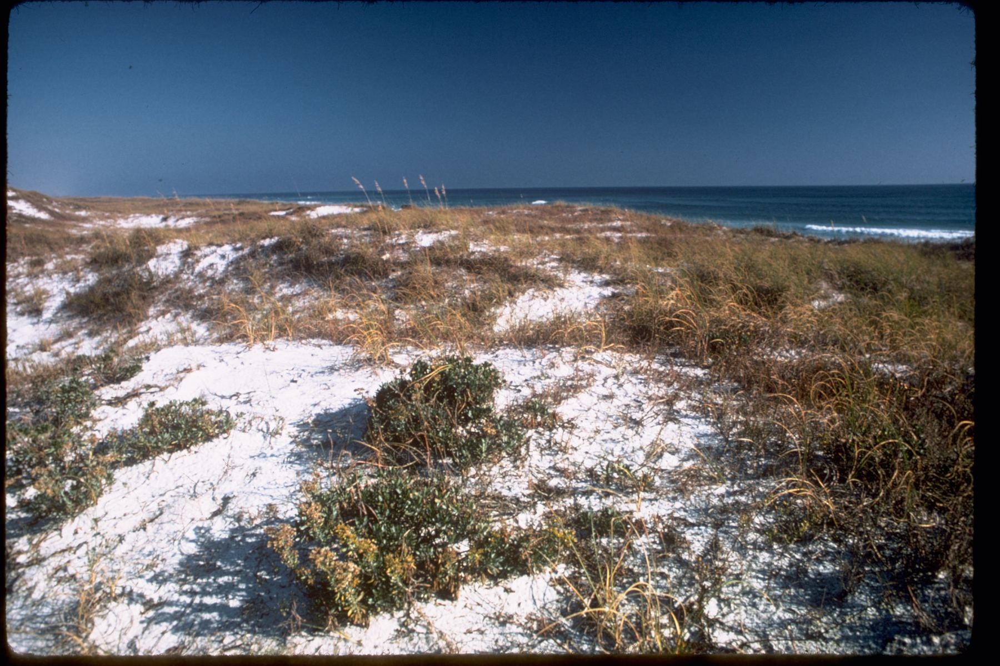

Walton County's beaches are not simply public or private. Court rulings, a repealed state law, a 2017 ordinance, a large lawsuit, private settlements, and beach-restoration law left a patchwork. This site is the record of what still applies.
Cross sections
Beach access
Three pictures of regimes already written on the 30A beach rules page. This is not a parcel map. The colors below are for these drawings only.
Public Beach
- Public beach
- Wet sand
Public beaches and state parks are their own regime. Visit South Walton says you may traverse the wet sand for the entire 26 miles, from a lawful entry.
Private Beach With 20-Foot Settlement Zone
- Private dry sand
- Settlement area
- Wet sand
Only owners who signed the 2023 settlement. The public may use the area 20 feet landward of the wet/dry sand line. That area is the Transitory Zone. The public cannot enter a participating parcel to reach that zone.
Private Beach Without Settlement Zone
- Private dry sand
- Wet sand
Where the owner did not sign, wet-sand travel only, from a lawful entry. This record does not say which parcels these are.
Not every private beach has the 20-foot zone. Only owners who signed the 2023 settlement. The public cannot enter a participating parcel to reach that zone.
The visible wet/dry line moves with the tide. It is not the mean high-water line. The 20-foot uses apply whether that strip is landward or seaward of mean high water. The zone cannot extend landward of an existing erosion control line between Topsail Hill Preserve State Park and the Okaloosa County line.
The record
How did we get here
-
1974
Tona-Rama described customary use and ordered judgment for the tower owner, and it was not a statewide grant of dry sand.
-
2017
Ordinance 2017-10 recognized customary use of dry sand with a 15-foot buffer, and it is not the current public rule.
-
2018
Section 163.035 took effect, and Walton County sued under it in December.
-
2023
The county approved a settlement for a 20-foot zone only for owners who signed.
-
2024
The circuit court affirmed a limited customary-use right on the dry sand of the parcels still in the case.
-
2025
Section 1 of chapter 2025-178 repealed section 163.035.
-
2026
The First DCA held that the February 2024 customary-use judgment no longer has legal effect.
What people ask
Can I walk the shoreline?
Yes. You may walk along the wet-sand portion of Walton County's shoreline for the full 26 miles, as long as you enter the beach from a lawful public access point or other legal entry. Wet sand beach rules
Is dry sand public?
No. Dry sand is not public as a blanket rule, and it is not private as a blanket rule. Public beaches, state parks, and beaches whose owners signed the 2023 settlement are different. Public beach and private beach
What is the 20-foot zone?
Only owners who signed the 2023 settlement. The public may use the area 20 feet landward of the wet/dry sand line, called the Transitory Zone, with the settlement limits. Beach rules for the 20-foot zone
Can I cross private property?
Not necessarily. The settlement says the public cannot enter a participating parcel to reach the 20-foot zone. Private beach crossing
Did the 2026 ruling make beaches private?
No. It held that the February 2024 customary-use judgment no longer has legal effect. It did not decide the settlement, and it did not say customary use disappeared. 2026 beach access ruling
What happens after beach nourishment?
Once the erosion control line survey is recorded, title seaward of that line is deemed vested in the state. Title landward stays with the upland owner. Sand added landward of the pre-project line remains the upland owner's, subject to a public easement for traditional uses of the sandy beach. Beach nourishment